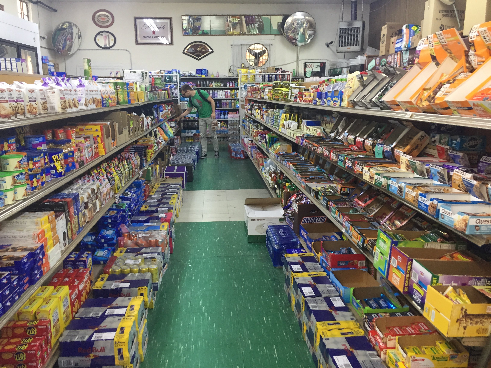
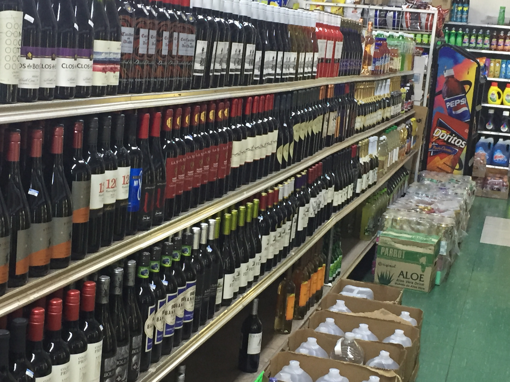

Although this market is much smaller than the one in downtown Berkeley, it arguably had more types of food. Of course there was the regular produce and meats, but there were also pretzels, honey, iced tea, oysters, and even some small restaurants and food trucks were parked there. Again, all of these items were placed on tables in almost makeshift-looking containers, which seem a lot less industrial than what is found in a store.

Now that I was in familiar territory again, I wanted to study the arrangement and products on grocery store shelves, armed with the experience of a farmers market.

Just like farmers markets, grocery stores sell much more than food items, mostly going into things like medical drugs and menstrual products. As expected, the lighting and ambiance of your typical grocery store like this one can be expressed as artificial, industrial, and much more commercial than an outside farmers market. However, I find this setup still strangely comforting.